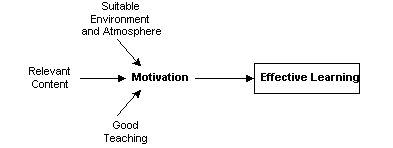
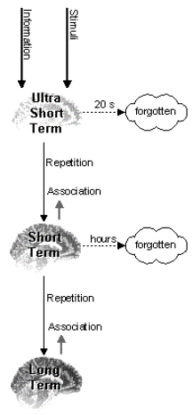
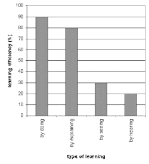

People are the central focus of teaching. Therefore, the patterns have to deal with biological and social basics that cannot be ignored. Taking these basics into account results in motivated participants, which in turn leads to successful learning. This section highlights some of them.
The human being is the result of thousands of years of evolution. Although ignored by modern society, there are still some aspects in a human being, that result from the time when we were animals, primarily following our basic instincts instead of thinking and planning as we usually do today.
One of these instincts is "fight or flight". That means, a creature runs away if it feels uncomfortable, stressed, or threatened. Experiences during such a situation are not considered worth learning and are forgotten by the brain, thus not allowing the animal to override its instincts with possibly fatal thoughts. Mapping this behavior to human behavior means that people have to feel comfortable if they want to learn. This includes their physical environment as well as their social well-being during a seminar.
Another biological fact you cannot ignore is the way our brain works, in particular how it stores and remembers information. The brain is divided into three sections, receiving information in order. The first stage is the ultra-short term memory. It receives information or stimuli from all organs in the body. It can remember things for 10 to 20 seconds. In the literature (see [FV] in Resources) it is often described as a kind of oscillation that abates after 10 to 20 seconds. During this time, the information has to be transported to short term memory, where it can be stored for a couple of hours. The transfer from ultra-short term to short term memory takes place, if the particular piece of information is either repeated, or if it can be associated with other information available in the brain - otherwise the information is irretrievably lost. This way, the ultra-short term memory serves as a filter that reduces the huge amount of information reaching the brain. The third stage is the long term memory. As you know, it can store information forever, some of it unconsciously. Information is transferred to long term memory if the brain thinks it is worth storing for a long time. Information or techniques that are repeated again and again over a long period of time or can be associated with other information in the long term memory are transferred to this part of the brain. Consequently, repetition and association to other topics is absolutely essential in teaching.
Further, as the following diagram shows, learning efficiency depends on the way the people deal with the contents. Participants should work on a topic on their own or explain the topic to somebody else. Just watching or listening to the teacher is significantly less effective. "Learning by doing" is the most effective way of teaching. However, this diagram shows the average person. Specific people might have different efficiencies.
It is also important that you plan your schedule in accordance with the daily rhythm of people. Late afternoon and right after lunch are times when people are generally less capable. Including breaks and arranging the topics in a suitable way is important.
The social basis for our pattern language is mutual respect between the teacher and the participants and among the participants. Every person is accepted as a human being with equal rights and equal duties. This means that everyone should follow to the basic rules of politeness. For example, let another person finish before start talking. The opinions of the other participants and the teacher are respected. If the teacher tries to explain something, the participants are quiet. They do not just leave the room whenever they would like to.
On the other hand, the teacher tries not to be authoritarian, treating the participants as subordinates. He respects their opinions and qualifications. He tries to teach the contents as effectively as possible and cares about his or her participants by including breaks, et cetera.
During a seminar, especially during longer ones, the group of participants and teacher(s) must live together. They form a group. This group should work together well, i.e. people should trust each other and be honest. However, everybody should accept the minimum social distance that other persons might need. Do not be intrusive.
In general, the atmosphere is at least as important as the methodical and technical content. The seminar should be held in a good atmosphere, humor is important and the teacher should be relaxed, honest, and competent.
You should also keep in mind, that for some participants, the seminar is a way to escape from everyday business. You should respect this, and not try to stress the participants.